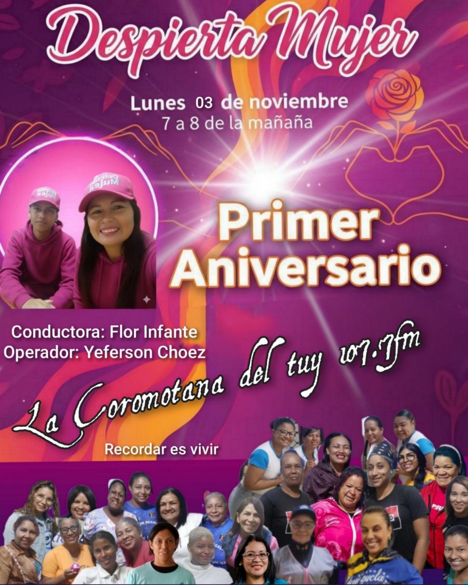
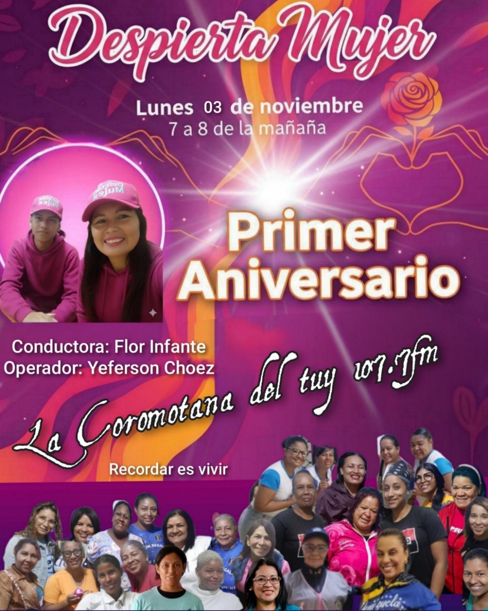

Despierta Mujer
Bienvenida a esta pagina especiamente creada para ti
Despierta Mujer!!
En el camino de cada mujer hay una historia esperando ser contada, una lección por aprender y una fuerza inquebrantable por despertar. Te invitamos a entrar a Despierta Mujer, un refugio digital creado con el corazón y la convicción de que juntas podemos construir un mañana más justo y equitativo.
De la mano de la Lic. Flor Infante, cada lunes se abren las puertas a conversaciones profundas y necesarias. Aquí no solo encontrarás temas de interés que tocan nuestra vida diaria, sino también el eco de voces valientes. Nos acompañan invitadas especiales, verdaderos ejemplos de Resiliencia y Compromiso, quienes comparten sus batallas y triunfos en la lucha constante por la erradicación de la violencia contra la mujer.
Este es un espacio seguro, diseñado para nutrir tu mente, fortalecer tu espíritu y recordarte tu valor. Nuestro objetivo es claro: inspirarte a vivir plenamente en una sociedad que te respete, que te ofrezca *igualdad de oportunidades* y que jamás te revictimice.
Despierta Mujer es más que un programa; es un movimiento de empoderamiento. ¡Únete a esta comunidad de aprendizaje y enseñanza!
Recuerda siempre: Eres creación perfecta de Dios.
Si quieres escuchar el programa en vivo, sintoniza La Coromotana del Tuy 107.7 los lunes de 7 a 8 am en la siguiente imagen.
⬇️ HAS CLIP AQUI ⬇️

 

FLOR INFANTE ACTIVISTA POR LOS DERECHOS DE LAS MUJERES A VIVIR UNA VIDA LIBRE DE VIOLENCIA LICENCIADA EN DESARROLLO ENDOGENO EN EL SUB AREA ADMINISTRACION PUBLICA TSU EN PRODUCCION DE MEDIOS RADIALES Y AUDIOVISUALES CONDUCTORA DEL PROGRAMA RADIAL DESPIERTA MUJER MI COMPROMISO CON LAS MUJERES NO ES UN TRABAJO TAMPOCO UNA POSICION POLITICA ES UN ESTILO DE VIDA.
La sororidad
Es un concepto fundamental en el feminismo, especialmente desarrollado y popularizado en el ámbito hispanohablante por la socióloga y escritora mexicana Marcela Lagarde.
Concepto de Sororidad Basado en Marcela Lagarde
La sororidad, según la conceptualización de Marcela Lagarde (una de las principales teóricas del feminismo latinoamericano), es mucho más que la simple amistad o simpatía entre mujeres. Es un concepto político, ético y práctico que implica:
Reconocimiento y Solidaridad: Es el reconocimiento mutuo entre mujeres de que existen como sujetos históricos y sociales en un contexto de patriarcado y opresión estructural. Implica la solidaridad activa y el compromiso para el apoyo incondicional, la ayuda mutua y el acompañamiento en los procesos de liberación y empoderamiento individual y colectivo.
Conciencia Crítica: La sororidad requiere una conciencia crítica profunda sobre el sistema que históricamente ha enfrentado a las mujeres entre sí (a través de la competencia, la envidia o la crítica destructiva, lo que Lagarde llama el "acoso entre mujeres" o "agresión pasiva"). Romper con estas dinámicas internas es esencial para construir comunidad.
Práctica Transformadora: No es solo un sentimiento, sino una práctica ética y transformadora. Se manifiesta en acciones concretas como:
Apoyar las decisiones y trayectorias de otras mujeres, incluso si son diferentes a las propias.
Cuidar los espacios y proyectos de otras mujeres.
Nombrar y desnaturalizar las opresiones compartidas.
Generar redes de apoyo seguras y horizontales.
Como resume Lagarde, la sororidad es el "amor entre mujeres" entendido como una fuerza política necesaria para "construir y desarmar las estructuras patriarcales" desde la base comunitaria y personal. Se trata de "hacer de los lazos de afecto y solidaridad un compromiso político".
Fomentando la Conciencia: Ideas Clave para el Taller Reflexivo
Para fomentar la conciencia en tu taller, céntrate en estas preguntas y reflexiones derivadas del concepto de Lagarde:
1. El Reconocimiento del "Nosotras" Histórico
Reflexión: ¿Cómo el patriarcado nos ha enseñado a ver a otras mujeres como rivales (en el amor, el trabajo, la belleza) en lugar de aliadas?
2. De la Empatía a la Acción Solidaria
Lagarde enfatiza la acción.reflexiona ¿En qué momentos he sacado el cuerpo por otra mujer? ¿He ofrecido mi red de contactos, mi tiempo o mi conocimiento de manera desinteresada?
3. La Autocompasión como Base de la Sororidad
La sororidad comienza por la relación con una misma. ¿Practico la misma paciencia, el mismo perdón y el mismo apoyo incondicional hacia mí que espero de mis compañeras? La sororidad implica el autocuidado como acto político.

El Patriarcado
El Patriarcado Un Concepto para la Conciencia y el Empoderamiento
El patriarcado es un sistema de organización social, política, económica y cultural en el que el poder y la autoridad están concentrados en manos de los hombres, quienes históricamente han ocupado las posiciones de liderazgo y control.
Es un sistema que establece y justifica la supremacía masculina y la subordinación de las mujeres y de lo considerado "femenino" o no masculino, perpetuando la desigualdad de género. Se sustenta en una ideología (el machismo) que naturaliza esta dominación, atribuyéndola a supuestas diferencias biológicas o naturales entre hombres y mujeres.
El Patriarcado en los Nuevos Tiempos: Avance y Resistencia
En la actualidad, el patriarcado no se manifiesta de forma tan explícita como en siglos anteriores, sino que ha mutado, haciéndose más sutil y complejo lo que se conoce como el "Patriarcado Moderno".
Avances Significativos (Las Grietas en el Sistema)
Los movimientos feministas y las luchas por la igualdad han logrado conquistas históricas, creando grietas significativas en la estructura patriarcal:
1- Legal y Acceso Político: Se ha logrado la igualdad formal ante la ley en muchos países (derecho al voto, a la propiedad, al divorcio). Hay mayor participación de mujeres en la política, aunque la paridad total sigue siendo un desafío.
2- Incorporación al Ámbito Público: La masiva entrada de mujeres a la educación superior y al mercado laboral ha desdibujado el rol exclusivo de cuidadora y ama de casa, transformando la estructura familiar tradicional.
3- Visibilidad y Desnaturalización: Temas como la violencia de género, el acoso sexual y el acoso laboral son cada vez menos tolerados. El feminismo ha logrado poner nombre a las opresiones (desnaturalización), llevando estos temas al debate público y a la legislación (ej. leyes contra el feminicidio).
4- Nuevas Masculinidades: Ha surgido una conciencia crítica en muchos hombres que buscan revisar los mandatos de la "masculinidad hegemónica" (dominante, proveedora y emocionalmente limitada), fomentando la corresponsabilidad en el cuidado y la expresión emocional.
Lo que Falta por Erradicar
(Los Pilares Ocultos)
A pesar de los avances, el sistema patriarcal persiste en formas más sofisticadas, evidenciando que la igualdad formal no implica igualdad real:
Área de Resistencia
Manifestación Actual del Patriarcado
Economía
El Techo de Cristal: Barreras invisibles que impiden a las mujeres acceder a los puestos de máximo poder y decisión.
La Brecha Salarial: Las mujeres siguen cobrando menos por realizar el mismo trabajo.
Vida Privada
La Doble o Triple Jornada: Aunque las mujeres trabajan fuera de casa, siguen asumiendo la mayor parte de las tareas de cuidado (hijos, hogar, ancianos), lo que limita su tiempo para el desarrollo personal y profesional.
Cultura/Ideología
Misoginia Digital y Medios: La persistencia de estereotipos de género en medios y redes sociales, así como el aumento del acoso en línea (ciberacoso, "machoesfera tóxica").
Violencia La Violencia de Género y el Feminicidio son el exponente más extremo y brutal de la dominación patriarcal, demostrando que el control sobre el cuerpo y la vida de las mujeres sigue vigente.

Este 24 de Noviembre no te pierdas la entrevista exclusiva por el programa Despierta mujer con la lincenciada Moraima Carpio presidenta del centro integral comunal de atencion a la mujer y Parto Humanizado Apacuana ubicado en Ocumare del Tuy municipio Tomas Lander calle Bolivar. El cual atendera a las mujeres de los 6 municipios de los Valles del Tuy.